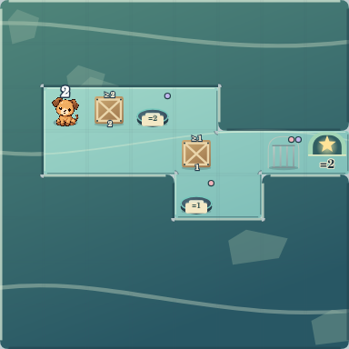
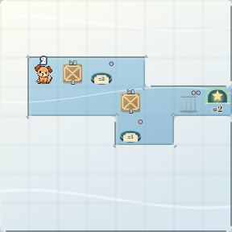
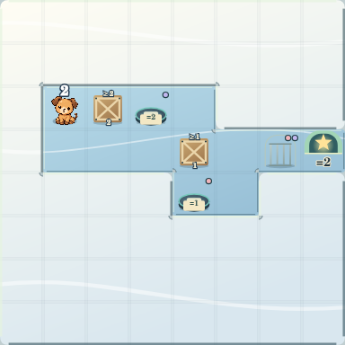
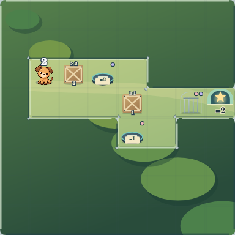
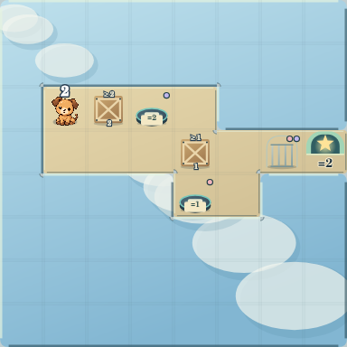
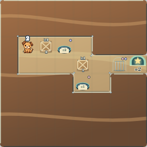
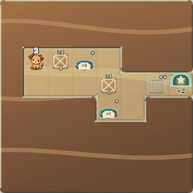
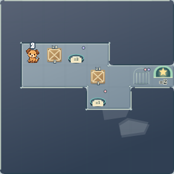
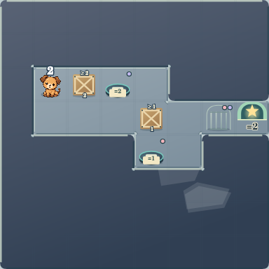

6つの世界、同じ8×8。
同じ箱パズルに世界テンプレートだけを適用。通行判定・箱・キャラクター・出口は同じです。画像は正式素材を使う実レンダラーのCanvas出力です。ブラウザーのスクリーンショットではありません。
実際に配置・操作する → · VERSION 4の基準と比較履歴
画像を縮めず36px／48px実寸で掲載しています。48pxの8×8は384px幅のため、狭い画面では横へスクロールしてください。
海



雪山




森



空



地中




洞窟




つながりと素材の混在
外角・内角・端・孤立を含む3×3例と、1つの盤面に6地域の素材を混在させた例です。IDを変えずに隣接マスから描画形状を決めています。